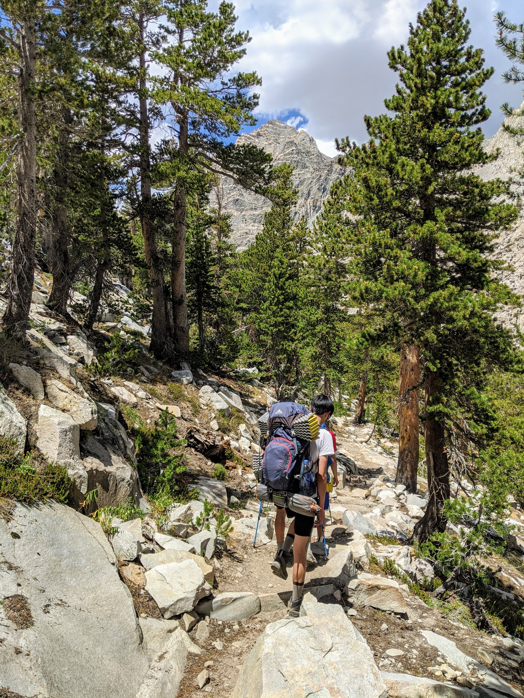
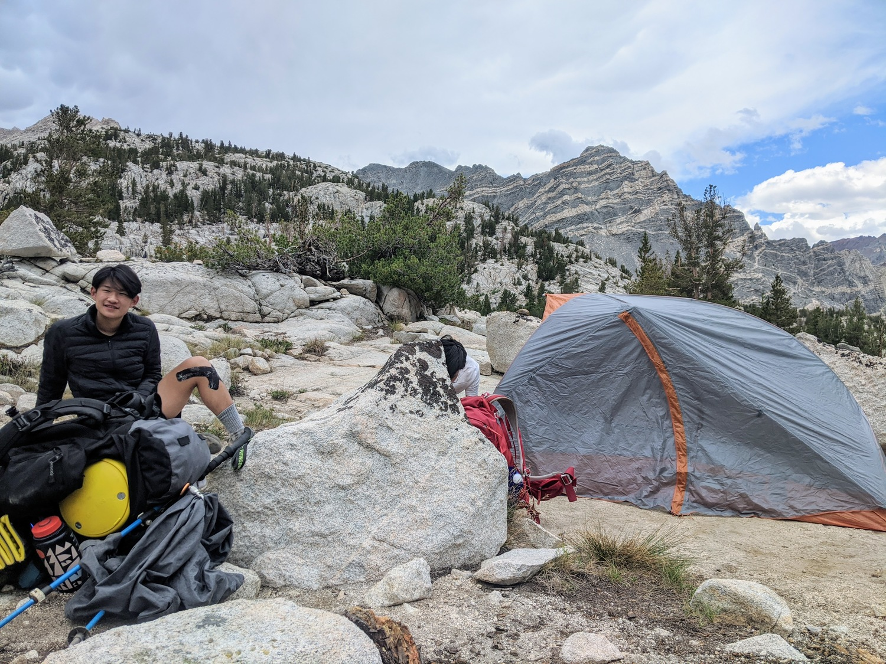
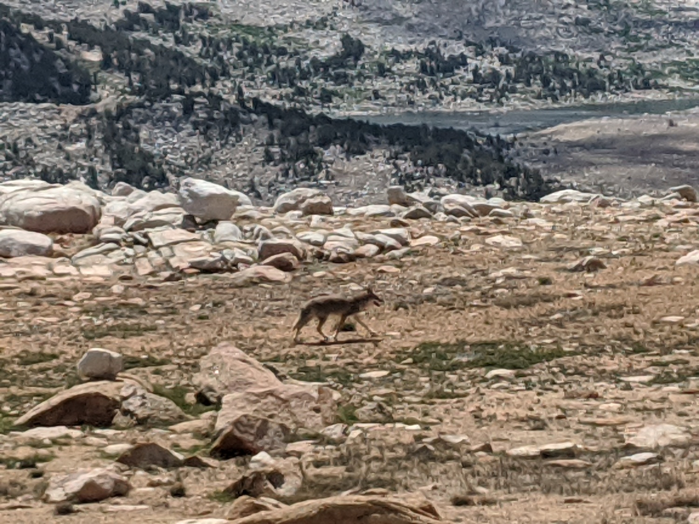

Royce Lakes
Route:
Caltopo map
A 5 day trip (including 2 days of driving) with my friends Daniel Yao, Hagen
Zhang, Jeremy Xu, and Joshua Mei.
Day 0
We drove 5 hours from the Bay Area to our campsite at Sonora Pass. We wanted
to camp along the way to reduce the driving time and help acclimate.
Along the way, we stopped in Oakdale to buy dinner and breakfast. We had
Subway and KFC - stopping at this little strip mall has been somewhat of a
tradition since we stop there so often on the way to the Yosemite area.
At the campsite at Sonora Pass, there were a lot of cars but not very many
people - most people were out on the trails. We set up next to a bench,
ate our dinners, and got to sleep quickly.
Compiling our gear
Day 1
Sunrise
After we cleaned up, we had to finish all our food or throw the rest away -
we couldn't keep food in the car at the trailhead. Jeremy bought way too
much food in Oakdale, so we gave all of our leftovers to a kind stranger
that was camping nearby.
After stopping for gas in Bridgeport, we drove to the Pine Creek Pass
trailhead.
Our pace in the initial uphill was very quick, pretty fast beyond my
expectations. Several streams cut across the trail, so there was no
shortage of water.
A great view of the Pine Creek Tungsten Mill
Looking uptrail from the switchbacks
Strangely, our pace slowed significantly as the trail flattened after the
first few miles.

The clouds began to build up heavily as we reached Pine Lake. Although a
few drops fell on us here and there, it never really rained.
Looking west at Pine Lake
Pine Creek overflowing above Pine Lake
We did not see very much of Upper Pine Lake, even though the trail winded
very close to it. The area was very buggy, so we were keen to get out of
there quickly.
We chose to stay the night at Honeymoon Lake. There were excellent campsites
on the southeast side, windy and exposed enough to keep the mosquitoes away.
Most of us took a nap after setting up our tents.
For dinner, some of us had Mountain House and I had ramen with spam. We
talked for a long time through the evening, and we tried to catch a glimpse
of the comet that was in the news. Even though I brought my binoculars, we
couldn't see it. To be fair, we didn't really know where to look. I was
in the process of switching from contacts to glasses, so I couldn't see a
single thing in the sky anyways. I had some pretty killer sleep that night
though.

Josh
Honeymoon Lake, looking towards Treasure
Chatting over dinner
Day 2
The goal for the second day was to make it all the way to the largest lake
of the four Royce Lakes. It was not very much distance or elevation gain,
but I knew the terrain would get trickier towards the end.
It was a comfortable uphill hike through meadows to Pine Creek Pass from Honeymoon Lake. It was beautiful in the morning light.
Everybody pushing aggressively on the uphill
At the top of Pine Creek Pass, we were treated to nice views of the opposing
mountains. We could even see Mt. Humphreys, though I did not recognize it at
the moment since I was more familiar with the more iconic angle.
Looking north from Pine Creek Pass
Jeremy on the trail, at the top of the Pass
Mt. Humphreys on the left
The small lake at the top of the pass
After a short stop, we cut directly west towards the Royce Lakes. It was
very easy off-trail walking, over grass and granite slabs. The gradient
was not very steep either, but we took our time since it was very beautiful.
Hiking upwards from the pass
Josh (left) and Daniel (center) and some lake (right)

A coyote walked past us on the way up
Hagen (center) and Jeremy (far right) walking below Merriam and Royce
We spent an awkwardly long time trying to take a group picture of ourselves
since there was nobody around to take it for us.
Here, Josh has only just made it into the picture
A better view of Humphreys from near the southernmost Royce Lake
We filtered water at the first (southernmost) Royce Lake. Merriam Peak
towered above us, and it would continue to be a focal point for the rest
of the day.
Merriam Peak
Hagen filtering water
After a short lunch on the first Royce Lake, the wind began to pick up
strongly. The clouds were rolling in with it, and we knew we had a limited
time before the weather came too. We headed further up.
It was a bit tricky to navigate the east side of the second lake due to
an annoying patch of snow. We made it across in one piece despite dislodging
some nerve-rattling boulders from underneath our feet.
The incredible clarity of the lake
We had a beautiful break at the north end of the second Royce Lake. We had
fun trying to take time-lapses of the clouds.
Merriam Peak from the second Royce Lake (counting S to N)
Our planned campsite was at the saddle west of Treasure, but navigating the
east side of the third Royce Lake was very tricky due to all the boulders.
At least we were lucky that the snowfield had melted sufficiently. We
managed to scramble just quickly enough to make it to the northeast end
of the lake right when it began to rain.
At the southeast end of the third Royce Lake
It was very rocky despite being mostly flat, but we managed to find a sandy
flat area to set up our tents. We did that quickly and dove in quickly to
wait out the short drizzle that was starting.
After the rain stopped, Hagen and I took a short profanity-laced dip into the
freezing water while the rest of them napped. Surprisingly, it felt really
good afterwards.
When we were making dinner together, I discovered that my fuel bottle pump
had snapped inside my pack. Luckily, Hagen had his Jetboil which was
sufficient for the five of us.
We watched the sunset together and then played One Night (very hard game).
Chatting
Merriam (left) and Royce (right) at sunset
Feather Peak in the sunset
Day 3
Hagen, Josh, and I got up at 4:50 to watch the sunrise, which didn't
disappoint. Most unfortunately, I accidentally stepped into the lake
because it was dark and it did not look like a lake at all. My left foot
was frozen for quite a while. But the sunrise made up for it.
Royce Lake 30 minutes before sunrise
Merriam Peak in the early morning light
After hearing its distinctive calls the previous evening and in the morning
as well, we finally located the marmot that had been following us.
After a loud discussion about how the
Coastline paradox affected the proper measurement of
trails, we headed back to the trailhead, returning via the more standard
route (via Royce Pass and Granite Park). We all wanted McDonald's pretty badly, so it was very speedy.
We ate McDonald's in Bishop while calling motels to check room rates for the
night. After an embarrassing phone call by me, we decided to just book
online. We landed a nice room in a motel in Lee Vining, where we had a very
pleasant evening with ice cream, steak, fish, fries, sundaes, and crappy
American vegetables.
The Iris Fire
Super hot room
Burgers and Things
Acancy Motel
{kind=link}
{kind=link}
{kind=link}
{kind=link}
{kind=link}
{kind=link}
{kind=link}
{kind=link}
{kind=link}
{kind=link}
{kind=link}
{kind=link}
{kind=link}
{kind=link}
{kind=link}
{kind=link}
{kind=link}
{kind=link}
{kind=link}
{kind=link}
{kind=link}
{kind=link}
{kind=link}
{kind=link}
{kind=link}
{kind=link}
{kind=link}
{kind=link}
{kind=link}
{kind=link}
{kind=link}
{kind=link}
{kind=link}
{kind=link}
{kind=link}
{kind=link}
{kind=link}
{kind=link}